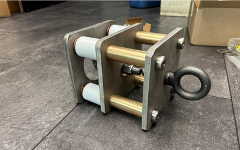

DIE-BOX SERVICE TIME
−75%Service time
Bar-shear die-box redesign
Redesigned a die-box assembly to address recurring bolt shear failures and improve serviceability.
Implemented redesign
Equipment redesign, fault diagnosis, and controls. Hands-on work with production equipment at Mid-West Forge.
View 4 projects
Hopper winch / Fabricated damping assemblyLess die-box service time
16 hours → 4 hoursEquipment troubleshooting
PLC, HMI & industrial robotsRSLogix 500 / RSLinx / ABB S4C / EZTouch 2.5
Redesigned a die-box assembly to address recurring bolt shear failures and improve serviceability.
Combined PLC logic tracing, electrical diagnosis, and robot maintenance to investigate production equipment faults.
Developed a custom damping arrangement for a dust-collector hopper winch experiencing wire-rope failures.
Recreating a gauging screen in EZTouch 2.5 to move away from a legacy HMI.
Mechanical Design / Manufacturing / Test Engineering